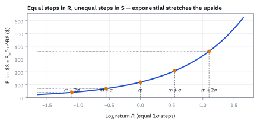
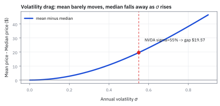
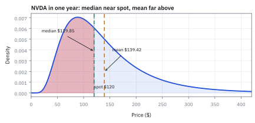
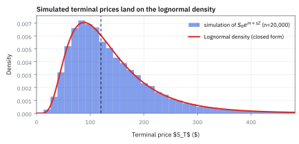
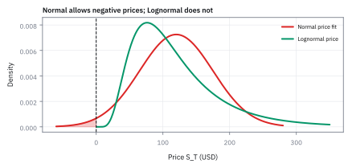
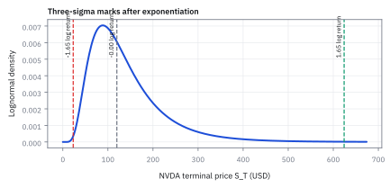

1.10 The Lognormal Distribution
เริ่มจากราคา 200 หรือ 50 แล้วหาที่มาของพจน์ลบครึ่ง variance ทีละงาน
หุ้นเริ่มที่ \$100 อีกหนึ่งปีมีสองทางเลือกที่โอกาสเท่ากัน: ราคาเพิ่มเป็นสองเท่าหรือเหลือครึ่งหนึ่ง ราคาเฉลี่ยจะยังเป็น \$100 หรือไม่?
เฉลย: สองราคาคือ \$200 และ \$50 จึงเฉลี่ยได้ \$125 ไม่ใช่ \$100 ความต่างนี้จะพาเราไปหาว่าทำไมต้องปรับจุดกลางของ log return และทำไม Normal จึงต้องปรับด้วยครึ่ง variance
เริ่มจากสิ่งที่จะคำนวณ: ราคาเดียวในวันนี้ หลายราคาที่อาจเกิดในวันหน้า
วันนี้หุ้นราคา \$100 อีกหนึ่งปีเราไม่รู้ว่าจะราคาเท่าไร จึงเขียนรายการผลลัพธ์ที่อาจเกิดขึ้น พร้อมโอกาสของแต่ละผลลัพธ์ รายการนี้คือ distribution ของราคาในอนาคต
คำว่า “ราคาเฉลี่ย” หมายถึงเอาราคาที่อาจเกิดขึ้นแต่ละค่า คูณโอกาสของค่านั้น แล้วบวกกัน ไม่ใช่ราคาที่หุ้นจำเป็นต้องไปถึง และไม่ใช่ค่าเฉลี่ยของราคาหลายวัน
หัวข้อนี้จะสร้างรายการผลลัพธ์ด้วยวิธีเดียว: สุ่ม log return ก่อน แล้วแปลงกลับเป็นราคา เราจะหาว่าต้องตั้งค่าเฉลี่ยของ log return เท่าไร จึงจะได้ค่าเฉลี่ยของราคาตามที่กำหนด
สัญลักษณ์สำหรับเปิดดูระหว่างอ่าน
| สัญลักษณ์ | ความหมาย | หน่วย |
|---|---|---|
| $S_0$ | ราคาเริ่มต้นที่กำหนดไว้ | USD |
| $S_T$ | ราคาที่อาจเกิดในเวลาปลายทาง $T$ | USD |
| $R$ | log return ทั้งช่วง เท่ากับ $\ln(S_T/S_0)$ | ไม่มีหน่วย |
| $m$ | ค่าเฉลี่ยของ log return $R$ ไม่ใช่ค่าเฉลี่ยของราคา | ไม่มีหน่วย |
| $s$ | standard deviation ของ log return ทั้งช่วง โดย $s^2$ คือ variance | ไม่มีหน่วย |
| $Z$ | ตัวสุ่ม standard Normal มีค่าเฉลี่ย 0 และ standard deviation 1 | ไม่มีหน่วย |
| $\mathbb E[X]$ | เฉลี่ยผลลัพธ์ของ $X$ โดยถ่วงด้วยโอกาสที่แต่ละค่าจะเกิด | หน่วยเดียวกับ X |
| $\mu$ | อัตราที่นิยามให้ mean price เป็น $S_0e^{\mu T}$ | ต่อปี |
| $\sigma$ | ขนาดการกระจายของ log return ต่อรากปี โดย $s^2=\sigma^2T$ | ต่อรากปี |
| $T$ | ความยาวช่วงเวลาที่กำลังคำนวณ | ปี |
| $r_i$ | ผลตอบแทนธรรมดาของช่วงที่ $i$ เช่น 0.10 คือเพิ่ม 10% | ไม่มีหน่วย |
| $a$ | ค่าคงที่ที่ใช้ในสูตร $\mathbb E[e^{aZ}]$ แล้วแทนด้วย $s$ หรือ $2s$ | ไม่มีหน่วย |
| $\phi(z)$ | ความสูงของเส้น standard Normal ที่ตำแหน่ง $z$ | ไม่มีหน่วย |
| $\Phi(z)$ | พื้นที่ของ standard Normal ทางซ้ายของ $z$ | ความน่าจะเป็น |
| $f_{S_T}(x)$ | Probability Density Function (PDF) ของราคาปลายทาง Lognormal | ต่อ USD |
| $\operatorname{mode}(S_T)$ | ราคาที่ยอดสูงสุดของกราฟ Lognormal ซึ่งมีค่า density สูงสุด | USD |
ขั้นที่ 1 — เริ่มที่เงิน 100: ขึ้น 10% แล้วลง 10%
วันที่สองคิดเปอร์เซ็นต์จากเงินที่มีหลังวันแรก จึงต้องคำนวณทีละวัน ให้ $S_0$ เป็นเงินเริ่มต้น และ $S_1,S_2$ เป็นเงินหลังวันแรกและวันที่สอง
วันแรกได้เพิ่ม \$10 แต่วันที่สองเสีย \$11 เพราะ 10% ของ 110 คือ 11 จึงเหลือ \$99
ตัวคูณ 1.10 และ 0.90 บอกว่าแต่ละวันเหลือเงินเป็นกี่เท่าของวันก่อน คูณสองตัวนี้ได้ 0.99 แปลว่าเงินปลายทางเป็น 99% ของเงินเริ่มต้น หรือขาดทุนรวม 1%
ขั้นที่ 2 — log return คืออะไร: เปลี่ยนตัวคูณให้เป็นเลขชี้กำลัง
เครื่องคิดเลขมีปุ่ม $\ln$ และปุ่ม $e^x$ ซึ่งทำงานย้อนกัน ถ้า $\ln y=x$ ก็แปลว่า $e^x=y$ โดย $e$ เป็นค่าคงที่ประมาณ 2.71828
เราตั้งชื่อให้ logarithm ของตัวคูณรวมว่า $R$ หรือ log return ส่วน $T$ หมายถึงเวลาปลายทางที่กำลังสนใจ
บรรทัดที่สองกด $e^x$ ทั้งสองข้างของบรรทัดแรก จึงย้อน $\ln$ กลับเป็นตัวคูณ บรรทัดที่สามคูณทั้งสองข้างด้วย $S_0$ จึงได้สูตรราคา
ดังนั้น $e^R$ ไม่ได้โผล่มาจากสมมติฐานเรื่องตลาด มันมาจากการย้อนนิยามของ log return เท่านั้น
ขั้นที่ 3 — ทำไม log return ของหลายวันจึงบวกกันได้
ใช้กฎ $e^{a+b}=e^a e^b$ เช่น $e^{2+3}=e^2 e^3$ เมื่อนำ $\ln$ มาใช้ย้อนกฎนี้ จะได้ $\ln(ab)=\ln a+\ln b$ สำหรับ $a,b>0$
ในสองวันแรก เราเพียงแทนตัวคูณ 1.10 และ 0.90 ลงในกฎของ $\ln$ ค่า −0.01005034 จึงเป็น log return รวมของสองวัน ส่วนผลตอบแทนธรรมดายังเป็น −1% เหมือนเดิม
สำหรับหลายวัน $r_i$ คือผลตอบแทนธรรมดาของวันที่ $i$ เครื่องหมาย $\prod$ สั่งให้คูณทุกวัน ส่วน $\sum$ สั่งให้บวกทุกวัน สูตรใช้ได้เมื่อ $1+r_i>0$ เพื่อให้ $\ln(1+r_i)$ มีค่า
เราจะสมมติอะไรเพิ่ม และอะไรยังไม่ได้พิสูจน์
logarithm ยังไม่ได้บอกว่า log return R มีรูปร่างแบบใด ต่อจากนี้สมมติว่า R เป็น Normal เหตุผลที่น่าลองคือ log return ทั้งปีเป็นผลบวกของ log return รายวันราว 252 ตัว และหัวข้อ 1.9 เห็นแล้วว่าผลบวกของชิ้นเล็กจำนวนมากเข้าหาระฆัง
ให้ $m$ เป็นค่าเฉลี่ยของ R และ $s$ เป็น standard deviation ของ R ทั้งสองวัด log return ตลอดช่วง ไม่ใช่ราคาเป็น USD หัวข้อ 1.9 เตือนแล้วว่าหางของข้อมูลจริงอ้วนกว่าระฆัง ทุกผลในหัวข้อนี้จึงเป็นผลภายใต้สมมติฐานนี้
ขั้นที่ 4 — สร้างค่าที่สุ่มได้ด้วยสามส่วน: จุดกลาง ขนาด และเลขที่สุ่ม
เริ่มจากตัวสุ่มมาตรฐาน $Z$ ที่มีค่าเฉลี่ย 0 และ standard deviation 1 เรียกว่า standard Normal การคูณ $Z$ ด้วย $s$ ขยายความผันผวนเป็น $s$ และการบวก $m$ เลื่อนจุดกลางจาก 0 ไปอยู่ที่ $m$
เครื่องหมาย $\sim$ อ่านว่า “มี distribution แบบ” ส่วน $s^2$ ในวงเล็บคือ variance หรือ standard deviation ยกกำลังสอง
ถ้าเราเริ่มจาก $R$ ที่เป็น Normal อยู่แล้ว ก็เขียนกลับได้ว่า $Z=(R-m)/s$ เมื่อ $s>0$: ลบจุดกลางออกก่อน แล้วหารด้วยความผันผวน จึงกลับมาเป็น standard Normal
ในการคำนวณครั้งหนึ่ง เรากำหนด $m,s$ ไว้ แล้วสุ่มเฉพาะ $Z$ ถ้า $s=0$ จะไม่มีส่วนสุ่มและได้ $R=m$ ทุกครั้ง
ลองแทนค่า: กำหนด m = 0.10 และ s = 0.20
| ค่า $Z$ ที่ลองใส่ | คำนวณ $R=0.10+0.20Z$ | ผลลัพธ์ $R$ |
|---|---|---|
| $-1$ | $0.10+0.20(-1)$ | $-0.10$ |
| $0$ | $0.10+0.20(0)$ | $0.10$ |
| $1$ | $0.10+0.20(1)$ | $0.30$ |
นี่คือการลองใส่เลขสามค่าเพื่ออ่านสูตร ไม่ได้หมายความว่า Normal มีเพียงสามผลลัพธ์ หรือว่าแต่ละแถวมีโอกาสหนึ่งในสาม
สังเกตว่า 0.10 และ 0.20 ไม่เปลี่ยนระหว่างแถว ตัวที่เปลี่ยนมีเพียง $Z$ จึงทำให้ $R$ เปลี่ยนตาม
ขั้นที่ 5 — จาก $e^R$ ไปเป็นผลคูณ: แทน R ก่อน แล้วใช้กฎเลขชี้กำลัง
ตอนนี้มีสองข้อความที่รู้แล้ว: $S_T=S_0e^R$ มาจากนิยาม log return และ $R=m+sZ$ มาจากการเขียนตัวสุ่ม Normal ให้เห็นจุดกลางกับขนาด เราจะนำข้อความที่สองไปแทนในข้อความแรก
จากบรรทัดแรกไปบรรทัดที่สอง: แทนตัวอักษร $R$ ด้วยสิ่งที่มันเท่ากับ คือ $m+sZ$ ยังไม่ได้หาค่าเฉลี่ยหรือใช้กฎเรื่องความน่าจะเป็น
จากบรรทัดที่สองไปบรรทัดที่สาม: ใช้ $e^{a+b}=e^a e^b$ โดยแทน $a=m$ และ $b=sZ$ เลขชี้กำลังที่บวกกันจึงแยกเป็นผลคูณได้
ตัวอย่างแถว $Z=1$ ด้านบนให้ $e^R=e^{0.30}=e^{0.10}e^{0.20}$ กดเครื่องคิดเลขสองแบบจะได้ประมาณ 1.349859 เท่ากัน
ชื่อ Lognormal บอกอะไร
เมื่อ log return เป็น Normal และ $S_T=S_0e^R$ เราเรียกราคาปลายทางว่ามี Lognormal distribution เพราะ log ของราคาคือ $\ln S_0+R$ ซึ่งเป็น Normal เช่นกัน ราคาทุกค่าที่สูตรสร้างเป็นบวก เพราะ $e^R$ ไม่มีวันติดลบ แต่ขึ้นสูงได้มาก และด้านที่สูงมากนี้เองที่ทำให้ค่าเฉลี่ยกับค่ากึ่งกลางแยกจากกัน
ที่มาที่ไป: ทำไมราคาหุ้นจึงถูกจำลองด้วยการคูณ
ปี 1900 Louis Bachelier เสนอแบบจำลองราคาหุ้นชิ้นแรกโดยให้ตัวราคาเป็น Normal ระฆังมีหางซ้ายยาวถึงลบอนันต์ แบบจำลองนั้นจึงให้โอกาสราคาติดลบ ขณะที่หุ้นมี limited liability ผู้ถือหุ้นเสียได้ไม่เกินเงินที่ลง ราคาจึงไม่ต่ำกว่าศูนย์
ราคาหุ้นเปลี่ยนแบบคูณ หนึ่งปีคือผลคูณของตัวคูณรายวันราว 252 ตัว เช่น 1.01 × 0.99 × 1.02 ไปเรื่อย ๆ log ของผลคูณคือผลบวกของ log รายวัน ซึ่งเข้าหาระฆังตามหัวข้อ 1.9 Galton กับ McAlister เขียนรูปนี้ไว้ในปี 1879 สำหรับของที่เกิดจากการคูณหลายปัจจัย
สำหรับราคาหุ้น M. F. M. Osborne เสนอในปี 1959 ให้ log ของราคาเดินแบบสุ่ม และ Paul Samuelson ทำให้เป็นแบบจำลองมาตรฐานในปี 1965 รูปนี้กลายเป็นฐานของแบบจำลองราคาแบบต่อเนื่องในบทที่ 11 และของสูตรตั้งราคา option ในบทที่ 13
หยุดก่อนใช้ E: แปลงก่อนแล้วเฉลี่ย หรือเฉลี่ยก่อนแล้วแปลง
$\mathbb E[X]$ คือค่าเฉลี่ยถ่วงด้วยโอกาส งานในวงเล็บต้องทำให้เสร็จในแต่ละผลลัพธ์ก่อนแล้วจึงเฉลี่ย $\mathbb E[e^R]$ จึงแปลง log return แต่ละค่าเป็นตัวคูณก่อนแล้วเฉลี่ย ส่วน $e^{\mathbb E[R]}$ เฉลี่ย log return ก่อนแล้วค่อยแปลง เหรียญในขั้นถัดไปจะให้สองลำดับนี้เป็นราคา 125 กับ \$100
ขั้นที่ 6 — ตัวอย่างที่เห็นราคาได้: เหรียญหนึ่งครั้งให้ราคา 200 หรือ 50
สมมติราคาเริ่ม \$100 โยนเหรียญหนึ่งครั้ง หัวให้ตัวคูณ 2 ก้อยให้ตัวคูณ $1/2$ ทั้งสองผลลัพธ์มีโอกาสเท่ากัน นี่คือสองอนาคตทางเลือกของช่วงเวลาเดียว ไม่ใช่ขึ้นวันแรกแล้วลงวันที่สอง
ตัวคูณ 2 เขียนเป็น $e^{\ln2}$ และตัวคูณ $1/2$ เขียนเป็น $e^{-\ln2}$ จึงได้ log return สองค่าที่บวกกันเป็นศูนย์
ราคาขาขึ้นเพิ่มจาก 100 ไป 200 คือได้ \$100 แต่ราคาขาลงลดจาก 100 ไป 50 คือเสีย \$50 เมื่อถ่วงโอกาสเท่ากัน ส่วนเพิ่มจึงมากกว่าส่วนลด ค่าเฉลี่ยเลยเป็น \$125
จึงเห็นด้วยตัวเลขว่า log return เฉลี่ยเป็นศูนย์ ไม่ได้ทำให้ราคาเฉลี่ยเท่ากับราคาเริ่มต้น คำอธิบายเรื่อง exponential โค้งขึ้นหมายถึงความไม่สมมาตรของจำนวนเงินที่เราเพิ่งคำนวณนี้
ขั้นที่ 7 — ถ้าต้องการราคาเฉลี่ย 100 ในตัวอย่างเหรียญ ต้องลดทุกผลลัพธ์เท่าไร
ค่าเฉลี่ยเดิมคือ \$125 แต่ต้องการ \$100 จึงคูณราคาทุกผลลัพธ์ด้วย $100/125=0.8$ ดูก่อนว่าทำแล้วได้ค่าเฉลี่ยตามเป้าจริงหรือไม่
ผลลัพธ์ 160 และ 40 เฉลี่ยกันได้ 100 ตามต้องการ การคูณราคาแต่ละค่าด้วย 0.8 เขียนอีกแบบได้ว่าเพิ่ม $\ln(0.8)$ เข้าไปในเลขชี้กำลัง เพราะการบวกเลขชี้กำลังทำให้ตัวคูณคูณกัน
สำหรับเหรียญนี้ต้องหักประมาณ 0.22314355 ไม่ใช่ครึ่ง variance ของ log return ซึ่งเท่ากับ $(\ln2)^2/2\approx0.24022651$ จึงยังสรุปไม่ได้ว่า “ต้องลบครึ่ง variance” สำหรับตัวสุ่มทุกชนิด
ต่อไปเราจะหาตัวคูณส่วนเกินของ Normal โดยเฉพาะ แล้วจึงรู้ว่าทำไมกรณีนั้นจึงลบครึ่ง variance ได้พอดี
ขั้นที่ 8 — ทำไมค่าคงที่จึงย้ายออกนอก E ได้: ลองคูณก่อนและหลังเฉลี่ย
สมมติตัวแปร $Y$ มีค่า 2 หรือ $1/2$ อย่างละครึ่ง และมีค่าคงที่ $c=80$ เปรียบเทียบการเฉลี่ย $cY$ กับการหา $c$ คูณค่าเฉลี่ยของ $Y$
ทั้งสองวิธีคูณ 80 กับผลลัพธ์ทุกตัวเหมือนกัน จึงให้คำตอบเดียวกัน การดึงค่าคงที่ออกไม่ได้ลบความสุ่ม มันแค่ย้ายงานคูณที่ใช้เลขตัวเดิมทุกครั้งไปทำหลังการเฉลี่ย
ขั้นที่ 9 — เขียนกฎเดียวกันสำหรับหลายผลลัพธ์
ถ้า $Y$ มีค่า $y_i$ ด้วยโอกาส $p_i$ การเฉลี่ยคือการบวก $p_i y_i$ ทุกค่า ถ้า $c$ ไม่เปลี่ยนไปตามผลลัพธ์ ก็ใช้กฎดึงตัวร่วมจากผลบวกได้
จากบรรทัดแรกไปบรรทัดที่สองดึงตัวร่วม $c$ ออกจากผลบวก เหมือน $ca+cb=c(a+b)$ ส่วนบรรทัดสุดท้ายย่อผลบวกกลับเป็นชื่อ $\mathbb E[Y]$
กฎนี้ใช้เมื่อค่าเฉลี่ยมีค่าแน่นอนและ $c$ เป็นค่าคงที่ในผลลัพธ์ที่กำลังเฉลี่ย ถ้า $c$ เปลี่ยนตามผลลัพธ์ด้วย จะดึงออกแบบนี้ไม่ได้ สำหรับตัวแปรต่อเนื่อง กฎเดียวกันใช้กับ integral แทนผลบวก
ขั้นที่ 10 — ใช้กฎค่าคงที่กับราคา: S เริ่มต้นและ $e^m$ ไม่ได้สุ่ม
กลับมาที่ $S_T=S_0e^m e^{sZ}$ เรากำหนด $S_0,m,s$ ไว้แล้วในแบบจำลอง สิ่งที่เปลี่ยนระหว่างอนาคตแต่ละแบบคือ $Z$ ดังนั้น $S_0$ และ $e^m$ เป็นค่าคงที่ แต่ $e^{sZ}$ ยังเปลี่ยนตาม $Z$
ก่อนลงมือ สังเกตว่าสิ่งที่สุ่มจริง ๆ ในสูตรราคามีตัวเดียว คืออัตราผลตอบแทน ส่วนราคาเริ่มต้นเป็นเลขที่รู้แล้ว ทุกบรรทัดต่อจากนี้จึงเป็นการถอดของที่ไม่สุ่มออกจากค่าเฉลี่ยทีละชั้น
แทนสูตรราคาลงไปก่อน แล้วดึง $S_0$ ออก เพราะใช้ราคาเริ่มต้นเดียวกันทุกผลลัพธ์ จากนั้นแทน $R=m+sZ$ และใช้กฎ $e^{m+sZ}=e^m e^{sZ}$ ซึ่งยังไม่เปลี่ยนค่าเฉลี่ยอะไรเลย
ดึง $e^m$ ออกได้ด้วยเหตุผลเดียวกัน เพราะ $m$ ถูกกำหนดไว้แล้ว เหลือ $\mathbb E[e^{sZ}]$ ก้อนเดียว ซึ่งเป็นงานเดียวที่เรายังไม่รู้คำตอบ
ข้อที่ต้องระวังที่สุด เราไม่ได้แทน $\mathbb E[e^{sZ}]$ ด้วย $e^{s\mathbb E[Z]}$ ตัวอย่างเหรียญแสดงแล้วว่าสลับงานสองอย่างนี้จะได้คำตอบผิด
ก่อนพิสูจน์ Normal: รู้ก่อนว่ากำลังหาตัวเลขอะไร
ให้ s เท่ากับ 0.20 แล้วสุ่ม Z จาก standard Normal หลายครั้ง คำนวณ $e^{0.20Z}$ แต่ละครั้งแล้วเฉลี่ย จะได้ราว 1.020201 ไม่ใช่ 1 เริ่มจาก \$100 ราคาเฉลี่ยจึงเป็นราว \$102.02 แม้ Z เฉลี่ยเป็นศูนย์ เลข 1.020201 คือ $e^{0.20^2/2}$ ขั้นที่ 11 ถึง 14 จะแสดงว่าตัวหาร 2 มาจากไหน
ขั้นที่ 11 — พิสูจน์ Normal 1: เขียนค่าเฉลี่ยเป็นผลรวมถ่วงน้ำหนักแบบต่อเนื่อง
ใช้ $a$ แทนค่าคงที่ใด ๆ ก่อน แล้วค่อยแทน $a=s$ ภายหลัง $Z$ ตัวใหญ่คือตัวสุ่ม ส่วน $z$ ตัวเล็กคือค่าที่ลองใส่ เช่น −1, 0 หรือ 1
ความสูงของ standard Normal ที่ $z$ คือ $\phi(z)$ และ $\phi(z)\,dz$ แทนโอกาสในช่วงเล็ก ๆ รอบ $z$ การเฉลี่ย $e^{aZ}$ จึงคูณค่าตัวคูณ $e^{az}$ กับน้ำหนักของช่วงนั้น แล้วรวมทุกช่วงด้วย integral
บรรทัดสุดท้ายแทนสูตร $\phi(z)$ จากบรรทัดแรก และดึง $1/\sqrt{2\pi}$ ออก เพราะเลขนี้เหมือนกันทุกค่า $z$ เช่นเดียวกับการดึงค่าคงที่ออกจากผลบวกที่ทำไปแล้ว
ขอบล่างและขอบบนเป็นลบอนันต์ถึงบวกอนันต์ เพราะ Normal เปิดให้ $Z$ เป็นจำนวนจริงใด ๆ ได้ เราจึงต้องรวมโอกาสทุกค่าที่แบบจำลองอนุญาต
ขั้นที่ 12 — พิสูจน์ Normal 2: รวมเลขชี้กำลัง แล้วเติมและลบจำนวนเดียวกัน
ใน integral มี $e^{az}$ คูณ $e^{-z^2/2}$ จึงรวมเลขชี้กำลังเป็น $az-z^2/2$ เราจะเขียนจำนวนนี้ใหม่ให้เห็นกำลังสองของ $z-a$
เป้าหมายคือทำให้เลขชี้กำลังกลายเป็นกำลังสองสมบูรณ์ เพราะรูปนั้นคือรูปของระฆัง และเราอินทิเกรตระฆังเป็นอยู่แล้ว วิธีคือเติมและลบจำนวนเดียวกันหนึ่งครั้ง
กระจาย $(z-a)(z-a)$ ก่อน จะได้ $z^2-az-az+a^2$ จึงมีพจน์ตรงกลางเป็น $-2az$ ลบ $a^2$ ทั้งสองข้าง ก็ได้รูปที่ต้องการแทนเข้าไป
จากนั้นดึง $-1/2$ เป็นตัวร่วม แทนข้อความที่จัดไว้ แล้วคูณ $-1/2$ กลับเข้าไปในวงเล็บ พจน์ $-a^2$ จึงกลายเป็น $+a^2/2$ ตรงนี้เองที่จำนวนครึ่งหนึ่งปรากฏในการพิสูจน์ ไม่ได้โผล่มาจากไหน
ตรวจด้วย $z=3,a=1$ แบบเดิมได้ $3-9/2=-1.5$ แบบใหม่ได้ $-(3-1)^2/2+1/2=-1.5$ เท่ากัน เพราะเราเพียงจัดรูป ไม่ได้ประมาณค่า
ขั้นที่ 13 — พิสูจน์ Normal 3: แยกตัวคูณที่ไม่ขึ้นกับ z
ใช้ผลจากงานก่อนแทนเลขชี้กำลังใน integral แล้วแยก $e^{a^2/2}$ ออกมาเป็นตัวคูณ ค่านี้ขึ้นกับ $a$ แต่ไม่ขึ้นกับ $z$ ที่เรากำลังไล่รวม
บรรทัดแรกใช้กฎแยกเลขชี้กำลังที่บวกกันอีกครั้ง บรรทัดที่สองดึง $e^{a^2/2}$ ออกนอก integral ด้วยกฎค่าคงที่
ตอนนี้รู้ตัวคูณด้านหน้าแล้ว เหลือเพียงหาว่า integral ด้านหลังมีค่าเท่าไร
ขั้นที่ 14 — พิสูจน์ Normal 4: ทำไม integral ที่เหลือจึงเท่ากับ 1
ใน integral ที่เหลือ ให้ชื่อใหม่ว่า $u=z-a$ เช่น ถ้า $a=1$ จุด $z=3$ จะตรงกับ $u=2$ เราเพียงเลื่อนชื่อพิกัดไปหนึ่งหน่วย ความกว้างของช่วงเล็ก ๆ ยังเท่าเดิม จึงมี $du=dz$
เมื่อ $z$ ไล่จากลบอนันต์ถึงบวกอนันต์ $u=z-a$ ก็ยังไล่ครบทุกจำนวนจริง ขอบของ integral จึงไม่เปลี่ยน
หลังเปลี่ยนตัวแปร สิ่งที่อยู่ใต้ integral คือความสูงของ standard Normal เดิม การรวมพื้นที่ทั้งเส้นเท่ากับรวมโอกาสของทุกผลลัพธ์ ซึ่งต้องได้ 1
จึงเหลือ $e^{a^2/2}$ เพียงตัวเดียว ผลนี้ตรงเป๊ะเมื่อ $Z$ เป็น Normal ส่วนเหรียญในขั้นที่ 7 ซึ่งไม่ใช่ Normal ต้องหัก 0.2231 ไม่ใช่ครึ่ง variance 0.2402
ขั้นที่ 15 — กลับมาหาค่าเฉลี่ยของราคา: แทน a ด้วย s
ก่อนพิสูจน์ เราค้างไว้ที่ $\mathbb E[S_T]=S_0e^m\mathbb E[e^{sZ}]$ ตอนนี้ใช้สูตรที่พิสูจน์โดยแทน $a=s$ ได้ทันที
บรรทัดที่สองแทนค่าของ $\mathbb E[e^{sZ}]$ ลงในสูตรที่ค้างไว้ บรรทัดสุดท้ายใช้กฎคูณฐานเดียวกันแล้วบวกเลขชี้กำลัง
ถ้าตั้ง $m=0$ ค่าเฉลี่ยราคาจะเป็น $S_0$ คูณ $e^{s^2/2}$ ซึ่งมากกว่า 1 เมื่อ $s>0$ ดังนั้นการตั้ง log return เฉลี่ยเป็นศูนย์จะยังเพิ่มราคาเฉลี่ย
ขั้นที่ 16 — ทดลองตั้งเป้าหมายก่อน: ต้องการราคาเฉลี่ย 110.52 แต่สูตรให้ 112.75
ให้ราคาเริ่ม \$100 และกำหนด $s=0.20$ สมมติเราอยากให้ราคาเฉลี่ยเป็น $100e^{0.10}\approx110.52$ ดอลลาร์ ลองใส่ $m=0.10$ ลงไปก่อน แล้วดูว่าผิดจากเป้าเท่าไร
ครั้งแรกเลขชี้กำลังของค่าเฉลี่ยเป็น 0.12 เพราะมี 0.02 เพิ่มจากการเฉลี่ยส่วนสุ่ม เราจึงลด $m$ จาก 0.10 เป็น 0.08 เมื่อส่วนสุ่มเพิ่มกลับอีก 0.02 เลขชี้กำลังของค่าเฉลี่ยจึงกลับเป็น 0.10 ตามต้องการ
เราไม่ได้หัก 2% ออกจากราคา 112.75 ตรง ๆ เราหัก 0.02 ออกจากเลขชี้กำลัง ซึ่งเท่ากับคูณทุกผลลัพธ์ด้วย $e^{-0.02}$
ขั้นที่ 17 — เขียนเป้าหมายด้วย mu แล้วแก้ m ทีละบรรทัด
นิยาม $\mu$ ว่าเป็นอัตราต่อปีที่ต้องการให้ค่าเฉลี่ยราคาเป็น $S_0e^{\mu T}$ โดย $T$ คือจำนวนปี ถ้า $\mu=0.10,T=1$ ก็ตรงกับเป้าหมาย \$110.52 ที่เพิ่งใช้
เราหา $m$ โดยตั้งค่าเฉลี่ยจากสูตรให้เท่ากับเป้าหมาย จากนั้นทำงานเดียวกันกับทั้งสองข้างของสมการ
จากบรรทัดแรกไปบรรทัดที่สอง หารทั้งสองข้างด้วย $S_0$ ซึ่งเป็นบวก จึงตัดราคาเริ่มต้นออกได้
บรรทัดที่สามใช้ $\ln$ ทั้งสองข้าง บรรทัดที่สี่ใช้กฎ $\ln(e^x)=x$ เพื่อย้อน exponential จึงเหลือสมการของเลขชี้กำลัง
บรรทัดสุดท้ายลบ $s^2/2$ ทั้งสองข้าง จึงได้ $m$ ที่ต้องใส่ใน log return ไม่มีการข้ามจากสมการราคาไปเดาคำตอบ
ถ้า $m$ ถูกกำหนดจากข้อมูลไว้แล้วแทนที่จะกำหนด $\mu$ ก็ใช้ความสัมพันธ์เดียวกันหา $\mu=(m+s^2/2)/T$ เมื่อ $T>0$ ตัวอักษรสองตัวนี้ไม่ใช่ค่าที่เลือกแยกกันได้อย่างอิสระ
ขั้นที่ 18 — จาก s ของทั้งช่วง ไปเป็น sigma ต่อหนึ่งปี
แบบจำลองนี้กำหนดให้ variance ของ log return โตตามเวลา: หนึ่งปีมี variance $\sigma^2$ ดังนั้น $T$ ปีมี variance $\sigma^2T$ เมื่อ $s$ เป็น standard deviation ของทั้งช่วง จึงมี $s^2=\sigma^2T$
บรรทัดที่สองถอดรากทั้งสองข้างโดยใช้ $s,\sigma\ge0$ บรรทัดที่สามแทน $s^2$ ด้วย $\sigma^2T$ ในสูตร $m$ ที่เพิ่งแก้ได้ บรรทัดสุดท้ายดึง $T$ เป็นตัวร่วม
คำว่า “ลบครึ่ง variance” ในเลขชี้กำลังหมายถึง $-s^2/2=-\sigma^2T/2$ สำหรับทั้งช่วง ถ้าเขียนเป็นอัตราต่อปี จะเป็น $-\sigma^2/2$ แล้วค่อยคูณด้วย $T$
variance โตตามเวลาเพราะสมมติว่าแต่ละวันไม่เกี่ยวกันและเหวี่ยงเท่ากัน แบบหัวข้อ 1.4: 252 วันที่มี variance เท่ากันรวมกันได้ 252 เท่าของวันเดียว
ขั้นที่ 19 — ประกอบสูตรราคา แล้วตรวจว่าค่าเฉลี่ยตรงเป้าจริง
เริ่มจาก $S_T=S_0e^{m+sZ}$ แล้วแทนสูตร $m$ และ $s$ ที่หาได้ เราจะตรวจคำตอบโดยเฉลี่ยกลับอีกครั้ง
เมื่อนำไปเฉลี่ย $e^{\sigma\sqrt T Z}$ ให้ตัวคูณ $e^{\sigma^2T/2}$ ตามสูตร Normal ที่พิสูจน์ไว้ เลขชี้กำลังส่วน − กับส่วน + จึงรวมเป็นศูนย์ เหลือ $\mu T$ ตามเป้าหมาย
พจน์ลบครึ่ง variance จึงชดเชยพอดีกับที่การเฉลี่ยส่วนสุ่มดันค่าเฉลี่ยขึ้น ถ้า log return ไม่ใช่ Normal ตัวชดเชยจะไม่ใช่ครึ่ง variance พอดี เหมือนเหรียญในขั้นที่ 7
ชื่อ Jensen’s inequality มาทีหลังตัวอย่างได้
ราคา 200 หรือ 50 แสดงแล้วว่าแปลงก่อนเฉลี่ยได้ 125 แต่เฉลี่ยก่อนแปลงได้ 100 ผลทั่วไปของเส้นที่โค้งขึ้นแบบ $e^x$ เรียกว่า Jensen’s inequality: แปลงก่อนเฉลี่ยให้ค่าใหญ่กว่าเสมอเมื่อมีความสุ่ม ชื่อนี้บอกแค่ทิศ ส่วนขนาดของส่วนชดเชย $s^2/2$ มาจากการจัดกำลังสองในขั้นที่ 12
ขั้นที่ 20 — median คือราคาแบ่งครึ่งผลลัพธ์ ไม่ใช่ราคาของเส้นทางที่รับประกัน
Normal สมมาตรรอบศูนย์ จึงมีโอกาสครึ่งหนึ่งที่ $Z\le0$ และอีกครึ่งที่ $Z\ge0$ เมื่อ $s>0$ ค่า $S_0e^{m+sZ}$ เพิ่มตาม $Z$ จึงรักษาลำดับของผลลัพธ์ไว้
ราคาเมื่อแทน $Z=0$ จึงเป็นเส้นแบ่งครึ่ง: ราคาอีกครึ่งหนึ่งอยู่ต่ำกว่าและอีกครึ่งอยู่สูงกว่า นี่คือนิยามของ median ไม่ได้บอกว่านักลงทุนแต่ละคนจะได้ราคานี้
mean คือค่าเฉลี่ยถ่วงด้วยโอกาส ส่วน median เป็นค่าที่แบ่งครึ่งโอกาส ทั้งสองตอบคนละคำถาม เมื่อ $s>0$ mean สูงกว่า median ด้วยตัวคูณ $e^{s^2/2}>1$ ถ้าไม่มีความสุ่ม ทั้งสองเท่ากัน
Figure 1.10a — ดูผลของ $e^x$: ระยะเท่ากันใน log return ให้ระยะราคาไม่เท่ากัน

เลือกค่า log return ที่ห่างจากจุดกลางเท่ากันทางซ้ายและขวา แล้วแปลงแต่ละค่าเป็น $S_0e^R$ ระยะเพิ่มของราคาทางขวาจะมากกว่าระยะลดทางซ้าย เช่น ตัวคูณ 2 เพิ่ม \$100 แต่ตัวคูณ 1/2 ลดเพียง \$50 เมื่อเริ่มที่ \$100
กราฟนี้แสดงการแปลงค่าทีละค่า ส่วนการหาค่าเฉลี่ยต้องนำน้ำหนักความน่าจะเป็นมาคูณด้วยตามที่ทำไปแล้ว
ตัวเลขฝึกคำนวณ: หุ้นตัวอย่างที่ติดป้าย NVDA
| Symbol | Value | อ่านว่าอะไร |
|---|---|---|
| $S_0$ | \$120 | ราคาเริ่มต้นสมมติ |
| $\mu$ | 0.15 ต่อปี | กำหนดให้ mean price เป็น $120e^{0.15T}$ |
| $\sigma$ | 0.55 ต่อรากปี | หนึ่งปีมี standard deviation ของ log return เท่ากับ 0.55 |
| $T$ | 1 ปี | เวลาจากวันนี้ถึงปลายทาง |
ตัวเลขเหล่านี้เป็นโจทย์สมมติที่ใช้กับกราฟในหัวข้อนี้ ไม่ใช่ราคาหรือการคาดการณ์ NVDA ปัจจุบัน เป้าหมายคือคำนวณ mean, median, การกระจายของราคา และโอกาสกำไรจากตัวเลขชุดเดียว
อัตรา $\mu=0.15$ ใช้กับ exponential จึงทำให้ mean price เพิ่ม $e^{0.15}-1\approx16.18\%$ ในหนึ่งปี ไม่ใช่เพิ่ม 15% แบบธรรมดา
ขั้นที่ 21 — ตัวเลขจริง 1: หาจุดกลาง log return แล้วแปลงเป็น median price
ใช้ $s^2=\sigma^2T$ ก่อน แล้วหักครึ่งหนึ่งออกจาก $\mu T$ เพื่อหา $m$ จากนั้นใช้สูตร median ที่พิสูจน์แล้ว
ค่า −0.00125 เป็น log return ไม่ใช่ราคา หาค่า $e^{-0.00125}\approx0.99875078$ ก่อน จึงค่อยคูณ 120 ได้ประมาณ \$119.85
median ต่ำกว่า \$120 เล็กน้อย เพราะครึ่ง variance 0.15125 มากกว่า $\mu T=0.15$ อยู่ 0.00125 ถ้า $\sigma$ เป็น 0.50 แทน จะได้ $m=0.025$ และ median \$123.04 ซึ่งสูงกว่า \$120
ขั้นที่ 22 — ตัวเลขจริง 2: คำนวณ mean price และส่วนต่าง
mean ใช้เลขชี้กำลัง $\mu T$ ส่วน median ใช้ $m$ อย่าสลับสองจำนวนนี้
ราคาเฉลี่ยคือประมาณ \$139.42 แต่ราคาแบ่งครึ่งผลลัพธ์คือประมาณ \$119.85 ต่างกันประมาณ \$19.57 ต่อหุ้น
mean สูงกว่าเพราะขาขึ้นให้เงินมากกว่าขาลง ที่ $Z=2$ ราคาเป็น \$360 สูงกว่า median อยู่ \$240 แต่ที่ $Z=-2$ ราคาเป็น \$40 ต่ำกว่า median แค่ \$80 สองราคานี้มีโอกาสเท่ากัน ค่าเฉลี่ยจึงถูกดึงขึ้น
ขั้นที่ 23 — จะหาการกระจายของราคา ต้องวัดระยะจากค่าเฉลี่ยก่อน
variance ของราคาเป็นค่าเฉลี่ยของระยะจากค่าเฉลี่ยยกกำลังสอง การยกกำลังสองทำให้ระยะทางซ้ายและขวาไม่หักล้างกัน ให้ $M=\mathbb E[S_T]$ เป็นชื่อย่อของ mean price ซึ่งเป็นค่าคงที่
บรรทัดที่สองกระจายกำลังสอง บรรทัดที่สามเฉลี่ยแต่ละพจน์แยกกัน และดึงค่าคงที่ $2M$ ออก ส่วนค่าเฉลี่ยของ $M^2$ ยังเป็น $M^2$ เพราะทุกผลลัพธ์ใช้จำนวนเดิม
บรรทัดที่สี่แทน $\mathbb E[S_T]=M$ บรรทัดสุดท้ายรวม $-2M^2+M^2=-M^2$ เราจึงต้องหาค่าเฉลี่ยของราคายกกำลังสอง $\mathbb E[S_T^2]$ เพิ่มอีกเพียงตัวเดียว
ขั้นที่ 24 — ยกกำลังสองราคา: คูณราคาเดิมกับตัวเอง
ใช้รูปสั้น $S_T=S_0e^{m+sZ}$ ก่อน เพื่อไม่ต้องแบกเลขชี้กำลังยาว ๆ ระหว่างทำพีชคณิต
คูณ $S_0$ สองตัวได้ $S_0^2$ และคูณเลขฐาน $e$ สองตัวโดยบวกเลขชี้กำลัง จากนั้นรวม $m+m=2m$ และ $sZ+sZ=2sZ$
บรรทัดสุดท้ายแยกเลขชี้กำลังที่บวกกันอีกครั้ง ทำให้เห็นว่า $S_0^2e^{2m}$ เป็นค่าคงที่ และ $e^{2sZ}$ เป็นส่วนที่ต้องเฉลี่ย
ขั้นที่ 25 — เฉลี่ยราคายกกำลังสอง: ใช้ผล Normal โดยแทน a = 2s
สูตรที่พิสูจน์ไว้คือ $\mathbb E[e^{aZ}]=e^{a^2/2}$ คราวนี้ตัวคูณหน้า $Z$ เป็น $2s$ จึงแทน $a=2s$ แทนที่จะเป็น $s$
บรรทัดแรกดึงค่าคงที่ออกตามกฎเดิม บรรทัดที่สองแทนค่าในสูตร Normal และบรรทัดที่สามคำนวณ $(2s)^2=4s^2$ แล้วหารสอง
บรรทัดสุดท้ายแทนผลกลับเข้าไปและรวมเลขชี้กำลัง เราได้สิ่งที่ขาดสำหรับสูตร variance แล้ว
ขั้นที่ 26 — ลบกำลังสองของค่าเฉลี่ยแล้วดึงตัวร่วม
mean price คือ $M=S_0e^{m+s^2/2}$ ดังนั้น $M^2=S_0^2e^{2m+s^2}$ นำไปลบออกจาก $\mathbb E[S_T^2]$
บรรทัดที่สองดึง $S_0^2e^{2m+s^2}$ เป็นตัวร่วม พจน์แรกจึงเหลือ $e^{s^2}$ และพจน์ที่สองเหลือ 1
สองบรรทัดถัดมาแทน $m=\mu T-s^2/2$ แล้วกระจาย 2 จะมี $-s^2+s^2$ ตัดกัน เหลือ $2\mu T$ บรรทัดสุดท้ายแทน $s^2=\sigma^2T$
ถ้า $\sigma=0$ จะมี $e^0-1=0$ และ variance เป็นศูนย์ ซึ่งตรงกับกรณีที่ทุกผลลัพธ์ให้ราคาเดียวกัน หน่วยของ variance เป็น USD ยกกำลังสอง ไม่ใช่ USD
ชื่อที่ใช้วัดการกระจายให้กลับเป็นหน่วยราคา
- SD
- standard deviation (SD) คือรากของ variance ใช้วัดขนาดการกระจายให้มีหน่วยเดียวกับตัวแปร เช่น ราคาเป็น USD ก็ได้ SD เป็น USD
ขั้นที่ 27 — ถอดรากเพื่อให้กลับเป็นหน่วยราคา แล้วหารค่าเฉลี่ยเพื่อเทียบเป็นสัดส่วน
standard deviation (SD) คือรากที่เป็นบวกของ variance จึงกลับมามีหน่วย USD ถ้าหาร SD ด้วย mean price หน่วย USD จะตัดกัน เหลือขนาดการกระจายเทียบกับขนาดราคาเฉลี่ย
ถอดราก $S_0^2$ ได้ $S_0$ เพราะราคาเริ่มต้นเป็นบวก และถอดราก $e^{2\mu T}$ ได้ $e^{\mu T}$ บรรทัดที่สองแทนสูตร SD และค่าเฉลี่ยลงในอัตราส่วน บรรทัดสุดท้ายตัดตัวคูณที่เหมือนกันทั้งเศษและส่วน
อัตราส่วนนี้ขึ้นกับแค่ $\sigma$ และ $T$ ไม่ขึ้นกับราคาเริ่มต้น ถ้าเหวี่ยงน้อยมันใกล้ $\sigma\sqrt T$ เช่น σ เท่ากับ 0.10 ได้ 10.03% ถ้าเหวี่ยงมากมันโตเร็วกว่านั้น ขั้นถัดไปจะเห็นกับ σ เท่ากับ 0.55
ขั้นที่ 28 — ตัวเลขจริง 3: คำนวณ variance และ SD โดยไม่ปัดเศษระหว่างทาง
แทนค่าเดิม $S_0=120,\mu=0.15,\sigma=0.55,T=1$ ใช้เครื่องคิดเลขเก็บค่าภายในเต็มความละเอียด แล้วปัดเฉพาะคำตอบที่แสดง
SD ประมาณ \$82.86 บอกว่าราคาปลายทางเหวี่ยงรอบ mean \$139.42 กว้างแค่ไหน ราวสองในสามของราคาเริ่มต้น
เมื่อเทียบกับค่าเฉลี่ยประมาณ \$139.42 จะได้ 59.43% ค่านี้สูงกว่า 55% ที่โจทย์ให้ เพราะ 55% วัด log return ส่วน 59.43% วัด SD ของราคาเทียบกับ mean price ตามสูตรที่เพิ่งคำนวณ
ขั้นที่ 29 — ตัวเลขจริง 4: โอกาสที่ราคาปลายทางสูงกว่าราคาเริ่มต้น
กำไรจากราคาหุ้นในโจทย์นี้หมายถึง $S_T>S_0$ โดยยังไม่คิดเงินปันผล ค่าธรรมเนียม หรือภาษี เราจะเปลี่ยนเงื่อนไขนี้ให้เป็นเงื่อนไขของ $Z$ ทีละขั้น
บรรทัดที่สองหารด้วย $S_0>0$ บรรทัดที่สามใช้ $\ln$ ซึ่งเพิ่มตามค่าที่ใส่ จึงไม่กลับทิศเครื่องหมายมากกว่า บรรทัดที่สี่ลบ $m$ แล้วหารด้วย $s>0$
สัญลักษณ์ $\Phi(z)$ หมายถึงพื้นที่ของ standard Normal ทางซ้ายของ $z$ ดังนั้นพื้นที่ทางขวาต้องเป็น $1-\Phi(z)$ ซึ่งหาได้จากตาราง Normal หรือเครื่องคิดเลข
ตัวเลข $0.00227273$ อยู่ทางขวาของศูนย์เล็กน้อย จึงเหลือพื้นที่ทางขวาน้อยกว่าครึ่งเล็กน้อย นี่คือเหตุผลที่ได้ 49.91% ทั้งที่ mean price สูงกว่า \$120 มาก
ลองเอง: +30% กับ −30% ห่างเท่ากันเป็นเงิน แต่โอกาสไม่เท่ากัน
ของที่มี: หุ้นราคา 100 มีอัตรา μ = 10% ต่อปีตามความหมายของขั้นที่ 17 และ σ = 25% ถามโอกาสที่ปีหน้าราคาเกิน 130 และโอกาสที่ต่ำกว่า 70 ลองคิดเองก่อนดูบรรทัดล่าง
ln 1.30 คือ 0.2624 แต่ ln 0.70 คือ −0.3567 ขาลง 30% ไกลกว่าขาขึ้น 30% ในหน่วย log ฝั่งขึ้นจึงเกิดบ่อยกว่าราวห้าเท่า ทั้งที่ห่างจาก 100 เท่ากันเป็นเงิน
กับดักคือใส่ 0.10 แทน m ในตัวบน จะได้ z เท่ากับ 0.6495 และโอกาสเกิน 130 เป็น 25.8% สูงเกินไป 3.9 จุด เพราะให้เครดิตกับอัตราที่ไม่มีอยู่ในโลกของ log
ขั้นที่ 30 — เส้น density ของราคา และจุดยอด: ทำไม mode ต่ำกว่า median ต่ำกว่า mean
ใช้ตัวเลขชุดเดิม $S_0=120$, $m=-0.00125$, $s=0.55$ แปลงเงื่อนไขราคาเป็นเงื่อนไขของ $Z$ แบบขั้นที่ 29 ได้ Cumulative Distribution Function (CDF) ของราคา แล้ว differentiate เป็น PDF ตามหัวข้อ 1.8 จากนั้นหาจุดที่เส้นสูงที่สุด
สามบรรทัดแรกคือขั้นที่ 29 ที่เปลี่ยนเป็นไม่เกิน $x$: ราคาไม่เกิน $x$ ก็ต่อเมื่อ $Z$ ไม่เกิน $(\ln(x/S_0)-m)/s$ บรรทัดที่สี่ถึงหกหาความชันของ CDF ความชันของ $\ln x$ คือ $1/x$ ตัวหาร $x$ ข้างหน้าจึงงอกออกมา
จุดยอดคือที่ความชันของ $\ln f$ เป็นศูนย์ ได้ \$88.57 ต่ำกว่า median \$119.85 และ mean \$139.42 ตัวหาร $x$ กดความสูงของราคาแพงลง ขณะที่หางขวายาวดึงค่าเฉลี่ยขึ้น
ราว 61% ของผลลัพธ์จบต่ำกว่าค่าเฉลี่ยเพราะ $\ln(139.42/120)$ เท่ากับ 0.15 ห่างจาก $m$ อยู่ 0.275 เท่าของ $s$ และพื้นที่ทางซ้ายของ 0.275 ใต้ระฆังคือ 0.608
Worked Example — ตรวจความเข้าใจด้วยการเปลี่ยนเลขหนึ่งตัว
โจทย์ให้อะไรมาบ้าง: ราคาเริ่ม \$100 เวลา 1 ปี และต้องการ mean price \$110.52 คือ 100 คูณ $e^{0.10}$ ลองสามแบบ คือไม่มีความผันผวน, s เท่ากับ 0.20 ที่แก้ m แล้ว และ s เท่ากับ 0.20 ที่ลืมแก้ m
คำตอบ: ไม่มีความผันผวนได้ m เท่ากับ 0.10 และทุกผลลัพธ์เป็น \$110.52 ส่วน s เท่ากับ 0.20 ต้องใช้ m เท่ากับ 0.08 mean ยังเป็น \$110.52 แต่ median ลดเป็น \$108.33 คือ 100 คูณ $e^{0.08}$
ตรวจเองใน 10 วินาที: ถ้าลืมแก้ m แล้วใช้ 0.10 กับ s เท่ากับ 0.20 สูตร $100e^{m+s^2/2}$ ให้ \$112.75 เกินเป้า \$2.23 ตรวจได้โดยไม่ต้องสุ่มแม้แต่ครั้งเดียว
แปลว่าอะไร: เพิ่มความผันผวนแล้วอยากคงค่าเฉลี่ยไว้ ต้องลด m ลงครึ่ง variance ทุกครั้ง กับดักคือเพิ่ม s แล้วลืมแก้ m ราคาเฉลี่ยของแบบจำลองจะสูงเกินเป้าแบบเงียบ ๆ
Figure 1.10b — คงค่าเฉลี่ยเป้าหมายไว้ แล้วเพิ่มความผันผวน

แกนนอนเปลี่ยน $\sigma$ โดยคง $S_0,\mu,T$ ไว้ เส้นค่าเฉลี่ยจึงคงที่ตาม $S_0e^{\mu T}$ แต่เส้น median ลดลงตาม $S_0e^{(\mu-\sigma^2/2)T}$ เพราะเราแก้ $m$ ใหม่ให้เหมาะกับ $\sigma$ ทุกจุด
ที่ σ เท่ากับ 55% ของโจทย์ ส่วนต่างคือ \$19.57 ตามขั้นที่ 22 แต่ละตำแหน่งบนแกนนอนคือแบบจำลองหนึ่งชุด ไม่ใช่เวลาที่เดินไป
Figure 1.10c — ดูตำแหน่ง mean, median และราคาเริ่มต้นบน distribution เดียวกัน

เส้น median แบ่งพื้นที่ใต้กราฟเป็นสองส่วนเท่ากัน ส่วนเส้นค่าเฉลี่ยอยู่ที่ค่าเฉลี่ยถ่วงน้ำหนัก จึงไม่จำเป็นต้องแบ่งพื้นที่ครึ่งหนึ่ง
ในโจทย์นี้ median ประมาณ \$119.85 อยู่ใกล้ราคาเริ่ม \$120 แต่ค่าเฉลี่ยอยู่ราว \$139.42 โอกาสกำไร 49.91% ใช้พื้นที่เหนือราคา \$120 ไม่ใช่พื้นที่เหนือเส้น mean
Figure 1.10d — ตรวจสูตรด้วยการสุ่มราคา 20,000 ครั้ง

สุ่ม $Z$ จาก standard Normal แล้วคำนวณ $R=m+sZ$ และ $S_T=S_0e^R$ สำหรับแต่ละค่าที่สุ่มได้ จากนั้นแบ่งราคาเป็นช่วงและนับว่าตกในแต่ละช่วงกี่ครั้ง
แท่งทับเส้นแดงของสูตรในขั้นที่ 30 ได้ดี ส่วนที่เหลื่อมเล็กน้อยมาจากการสุ่มแค่ 20,000 ครั้ง การสุ่มแบบนี้ตรวจว่าเราคำนวณสูตรถูก ส่วนการตรวจว่าตลาดจริงเป็นแบบนี้ไหมต้องใช้ Quantile-Quantile (QQ) plot ของหัวข้อ 1.9
อย่าแปลค่าเฉลี่ยว่าเป็นผลลัพธ์ที่คนหนึ่งคนจะได้รับ
mean และ median ใช้ได้ทั้งคู่ แต่ต้องบอกว่ากำลังตอบคำถามอะไรค่าเฉลี่ยใช้หาค่าเฉลี่ยถ่วงด้วยโอกาส ส่วน median ใช้หาราคาที่แบ่งผลลัพธ์ครึ่งหนึ่ง
ในโจทย์นี้ครึ่งหนึ่งของผลลัพธ์จบต่ำกว่า \$119.85 และราว 61% จบต่ำกว่า mean \$139.42 คนถือหุ้นตัวเดียวจึงมักได้น้อยกว่าค่าเฉลี่ย การถือหลายตัวช่วยให้ผลรวมเข้าใกล้ค่าเฉลี่ยได้ก็ต่อเมื่อหุ้นไม่ขยับไปด้วยกันทั้งหมด
ในโจทย์นี้ $\mu=15\%$ เป็นอัตราใน exponential ส่วน expected simple return หนึ่งปีคือ $e^{0.15}-1\approx16.18\%$ และโอกาสได้กำไรคือ 49.91% ทั้งสามจำนวนต่างกันเพราะตอบคนละคำถาม
ใช้สูตรนี้เมื่อสมมติฐานตอบโจทย์ที่กำลังถาม
| สิ่งที่แบบจำลองกำหนด | ผลที่ได้ | สิ่งที่ต้องตรวจเวลาใช้กับข้อมูล |
|---|---|---|
| ราคาเริ่มบวกและราคาเป็น $S_0e^R$ | ราคาปลายทางเป็นบวกเสมอ | ถ้าปริมาณที่สนใจมีศูนย์หรือติดลบได้ รูปนี้ไม่ครอบคลุมผลลัพธ์เหล่านั้น |
| $R$ เป็น Normal | ใช้ $\mathbb E[e^{aZ}]=e^{a^2/2}$ ได้ | ถ้า log return ไม่ใช่ Normal ต้องตรวจสูตรค่าเฉลี่ยใหม่ |
| ใช้ $\mu,\sigma$ คงที่ในช่วงที่คำนวณ | ได้คำตอบจากตัวเลขไม่กี่ตัว | ลองเปลี่ยนตัวเลขเพื่อดูว่าคำตอบไวต่อสมมติฐานเพียงใด |
| กำหนดเฉพาะ distribution ที่เวลา $T$ | คำนวณราคาปลายทางได้ | ยังไม่รู้ว่าราคาเดินผ่านจุดใดระหว่างวันนี้กับ $T$ |
หัวข้อนี้คำนวณราคาที่ปลายช่วง จึงยังไม่ได้ตั้งกฎการเคลื่อนที่ของราคาตลอดทาง หากโจทย์ถามว่าราคาจะชนระดับหนึ่งก่อนถึงวันสุดท้ายหรือไม่ ต้องเพิ่มแบบจำลองเส้นทางก่อน
การตั้งราคา option ยังต้องอธิบายว่าจะใช้โอกาสแบบใดในการประเมินราคา ไม่ใช่หยิบค่าเฉลี่ยจากโจทย์สมมตินี้ไปเป็นราคาซื้อขายโดยตรง
Figure 1.10e — ทำไม Normal ของราคาและ Normal ของ log return จึงต่างกัน

ถ้ากำหนดให้ราคาเองเป็น Normal จะมีผลลัพธ์ติดลบอยู่ใน distribution ด้วย แต่ถ้ากำหนดให้ log return เป็น Normal แล้วแปลงด้วย $S_0e^R$ ราคาที่ได้จะเป็นบวก
ระฆังของราคาที่มีค่าเฉลี่ย 120 และ SD 55 ให้โอกาสราคาติดลบ 1.46% ซึ่งเป็นไปไม่ได้สำหรับหุ้น ส่วน Lognormal ให้ศูนย์
Figure 1.10f — ลองค่าที่ห่างจากจุดกลางสาม standard deviation

แทน $Z=-3$ และ $Z=3$ ใน $S_T=S_0e^{m+sZ}$ จะได้ราคาสองค่าที่อยู่คนละด้านของ median บน log return ทั้งสองห่างจาก $m$ เท่ากันคือ $3s$ แต่ระยะราคาเป็น USD ไม่เท่ากัน
เส้นเหล่านี้เป็นจุดอ้างอิงของ distribution ไม่ใช่เพดานหรือพื้นของราคา ยังมีผลลัพธ์ที่อยู่ไกลกว่าสาม standard deviations ได้
ชื่อที่ใช้ หลังจากเห็นการคำนวณแล้ว
- log return
- นำตัวคูณราคาไปใส่ logarithm เพื่อให้ตัวคูณหลายช่วงกลายเป็นผลบวก เช่น $\ln[(1.10)(0.90)]=\ln1.10+\ln0.90$
- Lognormal distribution
- ตัวแปรบวกที่ logarithm ของมันเป็น Normal ในหัวข้อนี้ตัวแปรนั้นคือราคาปลายทาง ใช้แทนรูปแบบของราคาปลายทางที่เป็นบวก
- expectation / mean
- ค่าเฉลี่ยถ่วงด้วยโอกาสของแต่ละผลลัพธ์ ถ้ามีสองผลลัพธ์ที่โอกาสเท่ากัน ก็เอาสองค่านั้นบวกกันแล้วหารสอง
- median
- ค่าที่แบ่งโอกาสออกเป็นครึ่งหนึ่งด้านล่างและครึ่งหนึ่งด้านบนสำหรับ distribution ต่อเนื่องในตัวอย่างนี้
- variance / standard deviation
- variance เฉลี่ยระยะจากค่าเฉลี่ยยกกำลังสอง ส่วน standard deviation ถอดราก variance เพื่อให้หน่วยกลับมาตรงกับตัวแปรเดิม
- Jensen’s inequality
- กฎที่อธิบายว่าการใช้ function ที่โค้งขึ้นก่อนเฉลี่ยให้ผลอย่างไร ตัวอย่าง 200 กับ 50 ทำให้เห็นทิศทางได้ แต่จำนวนชดเชยต้องคำนวณจาก distribution ที่ใช้
- limited liability
- กฎที่ผู้ถือหุ้นเสียได้ไม่เกินเงินที่ลงทุน ใช้เป็นเหตุผลว่าราคาหุ้นต่ำกว่าศูนย์ไม่ได้
- mode
- จุดที่เส้นโค้ง density ขึ้นไปสูงสุด แสดงค่าผลลัพธ์ที่มีโอกาสเกิดกระจุกตัวมากที่สุดใน distribution
โค้ดตรวจ lognormal: median, mean, SD และ mode ของราคา
import numpy as np
from math import log, exp, sqrt
from statistics import NormalDist
N = NormalDist()
assert abs(100 * 1.10 * 0.90 - 99) < 1e-9 and abs(log(0.99) + 0.01005034) < 5e-9
assert abs(log(1.10) + log(0.90) - log(0.99)) < 1e-12
assert abs((100 * exp(log(2)) + 100 * exp(-log(2))) / 2 - 125) < 1e-9
assert abs(0.8 * 125 - 100) < 1e-9 and abs(log(0.8) + 0.22314355) < 5e-9
assert abs(100 * exp(0.10 + 0.02) - 112.75) < 5e-3 and abs(100 * exp(0.08 + 0.02) - 110.52) < 5e-3
S0, mu, sig, T = 120, 0.15, 0.55, 1
m, s = (mu - sig ** 2 / 2) * T, sig * sqrt(T)
med, mean = S0 * exp(m), S0 * exp(mu * T)
assert abs(m + 0.00125) < 1e-12 and abs(med - 119.850094) < 5e-7 and abs(mean - 139.420109) < 5e-7
var = S0 ** 2 * exp(2 * mu * T) * (exp(sig ** 2 * T) - 1)
assert abs(var - 6866.222237) < 5e-6 and abs(sqrt(var) - 82.862671) < 5e-7
assert abs(sqrt(exp(0.3025) - 1) - 0.594338) < 5e-7
assert abs(1 - N.cdf(-m / s) - 0.499093) < 5e-7
assert abs(S0 * exp(m - s ** 2) - 88.57) < 5e-3
z = np.random.default_rng(0).standard_normal(1_000_000)
assert abs((S0 * np.exp(m + s * z)).mean() / mean - 1) < 0.01 # simulated mean agreesโค้ดยืนยันว่าลบ s²/2 ออกจากจุดกลางแล้วราคาเฉลี่ยตรงเป้า คิด median \$119.85 mean \$139.42 และ mode \$88.57 ตรวจ SD \$82.86 กับโอกาส 49.91% ที่ราคาจบสูงกว่าเดิม แล้วจำลองหนึ่งล้านเส้นทางดูว่าค่าเฉลี่ยตรงกัน
สรุปที่ใช้ได้จริง
- สูตรราคามาจากการย้อนนิยาม log return: $S_T=S_0e^R$ จากนั้นแทน $R=m+sZ$ และแยกเลขชี้กำลังที่บวกกันเป็นผลคูณ
- ดึง $S_0e^m$ ออกจาก expectation ได้เพราะค่าทั้งสองเหมือนเดิมทุกผลลัพธ์ที่กำลังเฉลี่ย แต่ $e^{sZ}$ ยังเปลี่ยนตามตัวสุ่ม จึงต้องอยู่ใน expectation
- สำหรับ standard Normal เท่านั้น ผลที่ใช้ที่นี่คือ $\mathbb E[e^{sZ}]=e^{s^2/2}$ จึงมี $\mathbb E[S_T]=S_0e^{m+s^2/2}$
- ถ้ากำหนด mean price เป็น $S_0e^{\mu T}$ ต้องเลือก $m=\mu T-s^2/2$ แล้วใช้ $s^2=\sigma^2T$ เพื่อเขียนเป็นอัตราต่อปี
- mean เฉลี่ยจำนวนเงินตามโอกาส ส่วน median แบ่งโอกาสครึ่งหนึ่ง จึงไม่จำเป็นต้องเป็นราคาเดียวกัน และไม่มีตัวใดรับประกันผลลัพธ์ของนักลงทุนหนึ่งคน
- โจทย์สมมติ $S_0=120,\mu=0.15,\sigma=0.55,T=1$ ให้ค่าเฉลี่ยประมาณ \$139.42 median \$119.85 และโอกาสกำไรจากราคา 49.91%